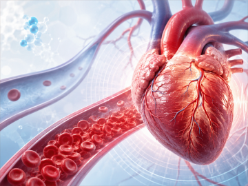
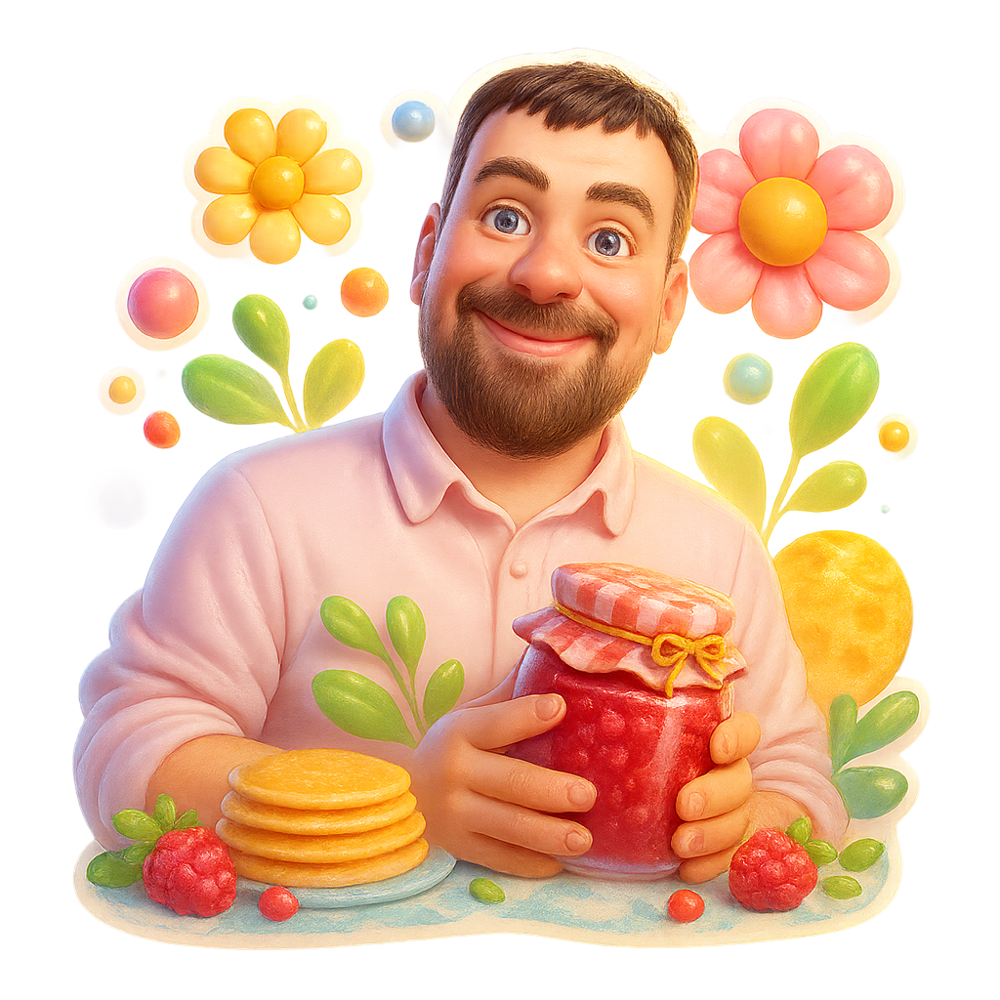
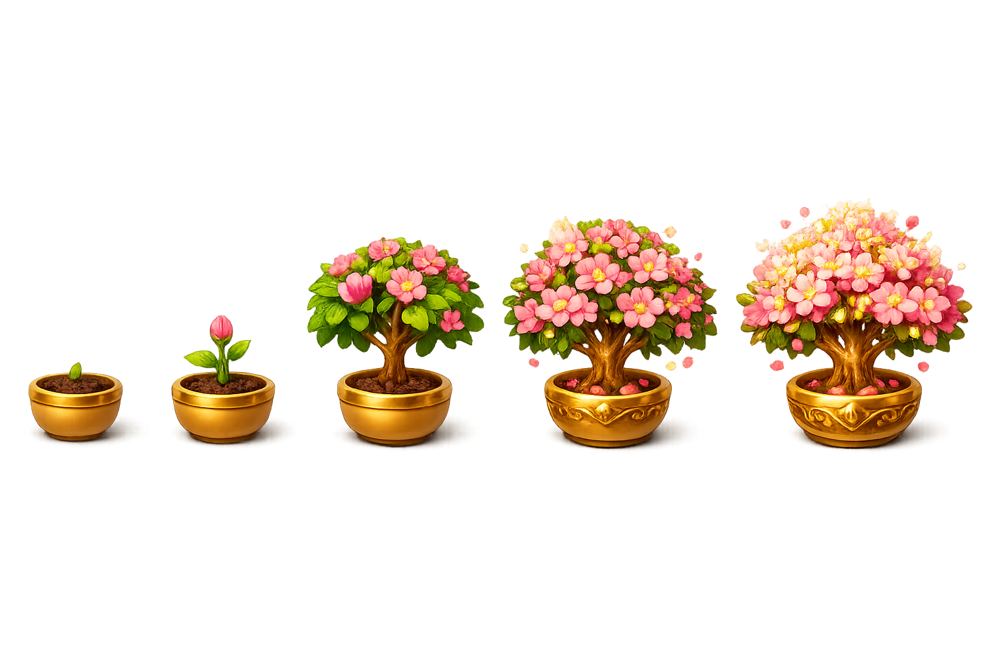

Ваш момент
Елена
Евгения
Александр
Ирина
Михаил
Запеканка из тыквы с творогом — нашла наконец-то идеальный рецепт. Без манки, нежная и держит форму. Делюсь.
От 7,6 млн ₽! 15 минут до исторического центра города! 2 варианта отделки. 20 минут до делового центра — каждый день в спокойствии и комфорте.
Сегодня сыну исполнилось 18. Помню, как привозила его из роддома — кажется, было вчера. А он уже выше меня на голову и собирается в институт.
Я люблю фрукты, это же витамины, для стройности полезно, ем их каждый день — яблоки, груши, виноград, иногда бананы. Но в последнее время заметила, что после них живот начинает пучить, урчать, иногда даже больно. Подскажите, что не так?
5 правил полива в жару, которые спасут урожай: поливайте утром или вечером, под корень, тёплой водой. Мульчируйте грядки и не бойтесь рыхлить почву.
Как вязать поводок без узлов за 30 секунд — короткое видео от подписчика. Сохраняйте, чтобы не потерять перед выходом на воду.
Скидки до 70% на технику для дачи. Газонокосилки, мангалы, насосы — успейте до конца недели с бесплатной доставкой.
Когда пациент видит в анализе крови сниженный гемоглобин, он чаще всего думает о слабости, бледности, железе и, возможно, питании. Кажется, что это история про кровь, но не про сердце.

Застрахуйте дачу за 5 минут онлайн. От пожара, затопления и краж — выплаты до 3 млн ₽ без визита агента.
6 месяцев назад с Андреем открыли зимний сезон, поймал судака на 5кг, ура товарищи! Поделюсь всеми снастями и точкой в комментариях.
Создал и подарил уникальный подарок

Семена и саженцы с доставкой за один день. Тысячи сортов, отзывы садоводов и кэшбэк баллами на следующий заказ.
Понял, что лучший отдых на даче — это не шашлык и не баня, а тишина в шесть утра, когда весь посёлок ещё спит, а ты с чашкой чая на крыльце.
Посадили розы на даче вместе с Ольгой. Тогда казалось, что не приживутся, а они до сих пор цветут.
В субботу субботник у пруда в 10:00. Берём перчатки и хорошее настроение — после уберёмся, будет чай с пирогами. Приходите семьями!
Получил подарок на День сельскохозяйственных строителей от

У меня такое было после пробежки, помогло растирание медвежьим жиром